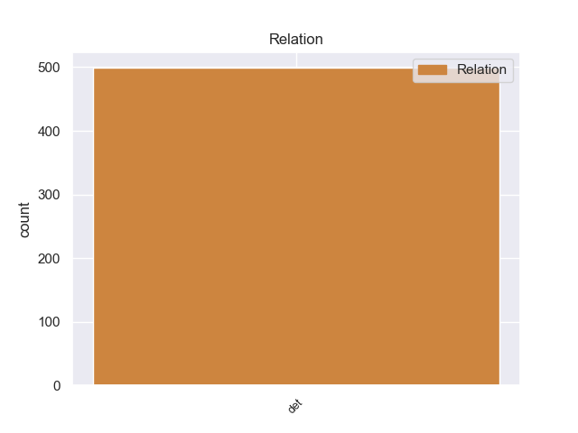
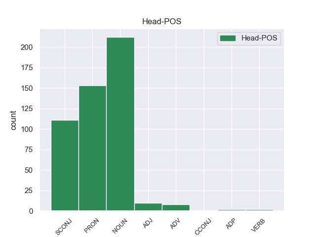
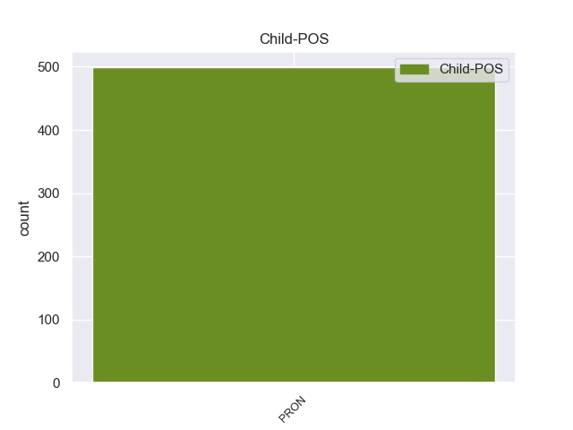

Distribution of features within this leaf



Morphosyntax Rules sorted by frequency.
- When the dependent token is the determiner(det) of the head token, and the head token is NOUN the Case needs to be Acc.
1 Jazmin _ _ _ _ 0 _ _ _
2 es _ _ _ _ 0 _ _ _
3 todo _ _ _ _ 0 _ _ _
4 lo él PRON _ Case=Acc|Gender=Masc|Number=Sing|Person=3|PrepCase=Npr|PronType=Prs 5 det _ _
5 contrario contrario NOUN _ Gender=Masc|Number=Sing 0 _ _ _
6 , _ _ _ _ 0 _ _ _
7 es _ _ _ _ 0 _ _ _
8 tímida _ _ _ _ 0 _ _ _
9 y _ _ _ _ 0 _ _ _
10 callada _ _ _ _ 0 _ _ _
11 , _ _ _ _ 0 _ _ _
12 pero _ _ _ _ 0 _ _ _
13 siempre _ _ _ _ 0 _ _ _
14 es _ _ _ _ 0 _ _ _
15 arrastrada _ _ _ _ 0 _ _ _
16 por _ _ _ _ 0 _ _ _
17 las _ _ _ _ 0 _ _ _
18 locuras _ _ _ _ 0 _ _ _
19 y _ _ _ _ 0 _ _ _
20 travesuras _ _ _ _ 0 _ _ _
21 que _ _ _ _ 0 _ _ _
22 inventa _ _ _ _ 0 _ _ _
23 Alma _ _ _ _ 0 _ _ _
24 . _ _ _ _ 0 _ _ _
1 El _ _ _ _ 0 _ _ _
2 mandatario _ _ _ _ 0 _ _ _
3 uruguayo _ _ _ _ 0 _ _ _
4 , _ _ _ _ 0 _ _ _
5 quien _ _ _ _ 0 _ _ _
6 llegó _ _ _ _ 0 _ _ _
7 el _ _ _ _ 0 _ _ _
8 domingo _ _ _ _ 0 _ _ _
9 a _ _ _ _ 0 _ _ _
10 Paraguay _ _ _ _ 0 _ _ _
11 , _ _ _ _ 0 _ _ _
12 inició _ _ _ _ 0 _ _ _
13 este _ _ _ _ 0 _ _ _
14 lunes _ _ _ _ 0 _ _ _
15 sus _ _ _ _ 0 _ _ _
16 actividades _ _ _ _ 0 _ _ _
17 a _ _ _ _ 0 _ _ _
18 el _ _ _ _ 0 _ _ _
19 colocar _ _ _ _ 0 _ _ _
20 una _ _ _ _ 0 _ _ _
21 ofrenda _ _ _ _ 0 _ _ _
22 floral _ _ _ _ 0 _ _ _
23 en _ _ _ _ 0 _ _ _
24 el _ _ _ _ 0 _ _ _
25 Panteón _ _ _ _ 0 _ _ _
26 de _ _ _ _ 0 _ _ _
27 los _ _ _ _ 0 _ _ _
28 Héroes _ _ _ _ 0 _ _ _
29 , _ _ _ _ 0 _ _ _
30 tras _ _ _ _ 0 _ _ _
31 lo él PRON _ Case=Acc|Gender=Masc|Number=Sing|Person=3|PrepCase=Npr|PronType=Prs 32 det _ _
32 cual cual PRON _ Number=Sing|PronType=Int,Rel 0 _ _ _
33 se _ _ _ _ 0 _ _ _
34 trasladó _ _ _ _ 0 _ _ _
35 a _ _ _ _ 0 _ _ _
36 el _ _ _ _ 0 _ _ _
37 Palacio _ _ _ _ 0 _ _ _
38 de _ _ _ _ 0 _ _ _
39 Gobierno _ _ _ _ 0 _ _ _
40 donde _ _ _ _ 0 _ _ _
41 fue _ _ _ _ 0 _ _ _
42 condecorado _ _ _ _ 0 _ _ _
43 por _ _ _ _ 0 _ _ _
44 Lugo _ _ _ _ 0 _ _ _
45 . _ _ _ _ 0 _ _ _
1 Consolidada _ _ _ _ 0 _ _ _
2 como _ _ _ _ 0 _ _ _
3 una _ _ _ _ 0 _ _ _
4 de _ _ _ _ 0 _ _ _
5 las _ _ _ _ 0 _ _ _
6 grandes _ _ _ _ 0 _ _ _
7 cadenas _ _ _ _ 0 _ _ _
8 españolas _ _ _ _ 0 _ _ _
9 , _ _ _ _ 0 _ _ _
10 ' _ _ _ _ 0 _ _ _
11 Sercotel _ _ _ _ 0 _ _ _
12 hotels _ _ _ _ 0 _ _ _
13 ' _ _ _ _ 0 _ _ _
14 , _ _ _ _ 0 _ _ _
15 fundada _ _ _ _ 0 _ _ _
16 en _ _ _ _ 0 _ _ _
17 1994 _ _ _ _ 0 _ _ _
18 , _ _ _ _ 0 _ _ _
19 introdujo _ _ _ _ 0 _ _ _
20 en _ _ _ _ 0 _ _ _
21 España _ _ _ _ 0 _ _ _
22 un _ _ _ _ 0 _ _ _
23 nuevo _ _ _ _ 0 _ _ _
24 modelo _ _ _ _ 0 _ _ _
25 de _ _ _ _ 0 _ _ _
26 cadena _ _ _ _ 0 _ _ _
27 hotelera _ _ _ _ 0 _ _ _
28 basada _ _ _ _ 0 _ _ _
29 en _ _ _ _ 0 _ _ _
30 la _ _ _ _ 0 _ _ _
31 comercialización _ _ _ _ 0 _ _ _
32 conjunta _ _ _ _ 0 _ _ _
33 bajo _ _ _ _ 0 _ _ _
34 una _ _ _ _ 0 _ _ _
35 misma _ _ _ _ 0 _ _ _
36 marca _ _ _ _ 0 _ _ _
37 de _ _ _ _ 0 _ _ _
38 hoteles _ _ _ _ 0 _ _ _
39 , _ _ _ _ 0 _ _ _
40 cuya _ _ _ _ 0 _ _ _
41 explotación _ _ _ _ 0 _ _ _
42 pertenece _ _ _ _ 0 _ _ _
43 a _ _ _ _ 0 _ _ _
44 diferentes _ _ _ _ 0 _ _ _
45 propietarios _ _ _ _ 0 _ _ _
46 , _ _ _ _ 0 _ _ _
47 permitiéndo _ _ _ _ 0 _ _ _
48 les _ _ _ _ 0 _ _ _
49 competir _ _ _ _ 0 _ _ _
50 contra _ _ _ _ 0 _ _ _
51 las _ _ _ _ 0 _ _ _
52 cadenas _ _ _ _ 0 _ _ _
53 en _ _ _ _ 0 _ _ _
54 igualdad _ _ _ _ 0 _ _ _
55 de _ _ _ _ 0 _ _ _
56 condiciones _ _ _ _ 0 _ _ _
57 , _ _ _ _ 0 _ _ _
58 lo él PRON _ Case=Acc|Gender=Masc|Number=Sing|Person=3|PrepCase=Npr|PronType=Prs 59 det _ _
59 que que SCONJ _ _ 0 _ _ _
60 le _ _ _ _ 0 _ _ _
61 ha _ _ _ _ 0 _ _ _
62 llevado _ _ _ _ 0 _ _ _
63 a _ _ _ _ 0 _ _ _
64 convertir _ _ _ _ 0 _ _ _
65 se _ _ _ _ 0 _ _ _
66 hoy _ _ _ _ 0 _ _ _
67 en _ _ _ _ 0 _ _ _
68 día _ _ _ _ 0 _ _ _
69 en _ _ _ _ 0 _ _ _
70 el _ _ _ _ 0 _ _ _
71 segundo _ _ _ _ 0 _ _ _
72 emblema _ _ _ _ 0 _ _ _
73 con _ _ _ _ 0 _ _ _
74 mayor _ _ _ _ 0 _ _ _
75 oferta _ _ _ _ 0 _ _ _
76 de _ _ _ _ 0 _ _ _
77 hoteles _ _ _ _ 0 _ _ _
78 urbanos _ _ _ _ 0 _ _ _
79 en _ _ _ _ 0 _ _ _
80 España _ _ _ _ 0 _ _ _
81 . _ _ _ _ 0 _ _ _
1 No _ _ _ _ 0 _ _ _
2 se _ _ _ _ 0 _ _ _
3 su _ _ _ _ 0 _ _ _
4 nombre _ _ _ _ 0 _ _ _
5 ni _ _ _ _ 0 _ _ _
6 nada _ _ _ _ 0 _ _ _
7 , _ _ _ _ 0 _ _ _
8 solo _ _ _ _ 0 _ _ _
9 me _ _ _ _ 0 _ _ _
10 sorprendí _ _ _ _ 0 _ _ _
11 por _ _ _ _ 0 _ _ _
12 lo él PRON _ Case=Acc|Gender=Masc|Number=Sing|Person=3|PrepCase=Npr|PronType=Prs 13 det _ _
13 guapa guapo ADJ _ Gender=Fem|Number=Sing 0 _ _ _
14 que _ _ _ _ 0 _ _ _
15 era _ _ _ _ 0 _ _ _
16 , _ _ _ _ 0 _ _ _
17 aunque _ _ _ _ 0 _ _ _
18 imagino _ _ _ _ 0 _ _ _
19 que _ _ _ _ 0 _ _ _
20 no _ _ _ _ 0 _ _ _
21 sere _ _ _ _ 0 _ _ _
22 el _ _ _ _ 0 _ _ _
23 unico _ _ _ _ 0 _ _ _
24 que _ _ _ _ 0 _ _ _
25 lo _ _ _ _ 0 _ _ _
26 diga _ _ _ _ 0 _ _ _
27 si _ _ _ _ 0 _ _ _
28 no _ _ _ _ 0 _ _ _
29 que _ _ _ _ 0 _ _ _
30 cualquiera _ _ _ _ 0 _ _ _
31 que _ _ _ _ 0 _ _ _
32 tenga _ _ _ _ 0 _ _ _
33 ojos _ _ _ _ 0 _ _ _
34 lo _ _ _ _ 0 _ _ _
35 dirá _ _ _ _ 0 _ _ _
36 . _ _ _ _ 0 _ _ _
1 Se _ _ _ _ 0 _ _ _
2 espera _ _ _ _ 0 _ _ _
3 que _ _ _ _ 0 _ _ _
4 el _ _ _ _ 0 _ _ _
5 argentino _ _ _ _ 0 _ _ _
6 firme _ _ _ _ 0 _ _ _
7 por _ _ _ _ 0 _ _ _
8 lo él PRON _ Case=Acc|Gender=Masc|Number=Sing|Person=3|PrepCase=Npr|PronType=Prs 9 det _ _
9 menos menos ADV _ Degree=Cmp 0 _ _ _
10 por _ _ _ _ 0 _ _ _
11 las _ _ _ _ 0 _ _ _
12 cuatro _ _ _ _ 0 _ _ _
13 temporadas _ _ _ _ 0 _ _ _
14 que _ _ _ _ 0 _ _ _
15 le _ _ _ _ 0 _ _ _
16 quedarían _ _ _ _ 0 _ _ _
17 de _ _ _ _ 0 _ _ _
18 fútbol _ _ _ _ 0 _ _ _
19 a _ _ _ _ 0 _ _ _
20 alto _ _ _ _ 0 _ _ _
21 nivel _ _ _ _ 0 _ _ _
22 . _ _ _ _ 0 _ _ _
1 El _ _ _ _ 0 _ _ _
2 hecho _ _ _ _ 0 _ _ _
3 que _ _ _ _ 0 _ _ _
4 el _ _ _ _ 0 _ _ _
5 nuevo _ _ _ _ 0 _ _ _
6 régimen _ _ _ _ 0 _ _ _
7 que _ _ _ _ 0 _ _ _
8 alzó _ _ _ _ 0 _ _ _
9 en _ _ _ _ 0 _ _ _
10 los _ _ _ _ 0 _ _ _
11 años _ _ _ _ 0 _ _ _
12 1976-1978 _ _ _ _ 0 _ _ _
13 fue _ _ _ _ 0 _ _ _
14 de _ _ _ _ 0 _ _ _
15 oficiales _ _ _ _ 0 _ _ _
16 moderados _ _ _ _ 0 _ _ _
17 como _ _ _ _ 0 _ _ _
18 Deng _ _ _ _ 0 _ _ _
19 Xiaoping _ _ _ _ 0 _ _ _
20 dio _ _ _ _ 0 _ _ _
21 un _ _ _ _ 0 _ _ _
22 pretexto _ _ _ _ 0 _ _ _
23 para _ _ _ _ 0 _ _ _
24 juzgar _ _ _ _ 0 _ _ _
25 la _ _ _ _ 0 _ _ _
26 gente _ _ _ _ 0 _ _ _
27 dirigente _ _ _ _ 0 _ _ _
28 en _ _ _ _ 0 _ _ _
29 la _ _ _ _ 0 _ _ _
30 revolución _ _ _ _ 0 _ _ _
31 , _ _ _ _ 0 _ _ _
32 entre entre ADP _ _ 0 _ _ _
33 ellos él PRON _ Case=Acc,Nom|Gender=Masc|Number=Plur|Person=3|PronType=Prs 32 det _ _
34 Wang _ _ _ _ 0 _ _ _
35 Hongwen _ _ _ _ 0 _ _ _
36 , _ _ _ _ 0 _ _ _
37 el _ _ _ _ 0 _ _ _
38 capataz _ _ _ _ 0 _ _ _
39 en _ _ _ _ 0 _ _ _
40 hecho _ _ _ _ 0 _ _ _
41 de _ _ _ _ 0 _ _ _
42 los _ _ _ _ 0 _ _ _
43 Guardas _ _ _ _ 0 _ _ _
44 Rojos _ _ _ _ 0 _ _ _
45 . _ _ _ _ 0 _ _ _
1 El _ _ _ _ 0 _ _ _
2 público _ _ _ _ 0 _ _ _
3 de _ _ _ _ 0 _ _ _
4 la _ _ _ _ 0 _ _ _
5 tira _ _ _ _ 0 _ _ _
6 era _ _ _ _ 0 _ _ _
7 mayormente _ _ _ _ 0 _ _ _
8 adolescente _ _ _ _ 0 _ _ _
9 , _ _ _ _ 0 _ _ _
10 pero _ _ _ _ 0 _ _ _
11 la _ _ _ _ 0 _ _ _
12 ficción _ _ _ _ 0 _ _ _
13 no _ _ _ _ 0 _ _ _
14 alcanzó _ _ _ _ 0 _ _ _
15 el _ _ _ _ 0 _ _ _
16 éxito _ _ _ _ 0 _ _ _
17 esperado _ _ _ _ 0 _ _ _
18 debido _ _ _ _ 0 _ _ _
19 a _ _ _ _ 0 _ _ _
20 que _ _ _ _ 0 _ _ _
21 compitió _ _ _ _ 0 _ _ _
22 con _ _ _ _ 0 _ _ _
23 el _ _ _ _ 0 _ _ _
24 fenómeno _ _ _ _ 0 _ _ _
25 de _ _ _ _ 0 _ _ _
26 Casi _ _ _ _ 0 _ _ _
27 Ángeles _ _ _ _ 0 _ _ _
28 , _ _ _ _ 0 _ _ _
29 por _ _ _ _ 0 _ _ _
30 lo él PRON _ Case=Acc|Gender=Masc|Number=Sing|Person=3|PrepCase=Npr|PronType=Prs 31 det _ _
31 que que CCONJ _ _ 0 _ _ _
32 se _ _ _ _ 0 _ _ _
33 hizo _ _ _ _ 0 _ _ _
34 un _ _ _ _ 0 _ _ _
35 cambio _ _ _ _ 0 _ _ _
36 en _ _ _ _ 0 _ _ _
37 la _ _ _ _ 0 _ _ _
38 historia _ _ _ _ 0 _ _ _
39 pasándo _ _ _ _ 0 _ _ _
40 se _ _ _ _ 0 _ _ _
41 a _ _ _ _ 0 _ _ _
42 llamar _ _ _ _ 0 _ _ _
43 Atracción _ _ _ _ 0 _ _ _
44 x _ _ _ _ 0 _ _ _
45 4 _ _ _ _ 0 _ _ _
46 en _ _ _ _ 0 _ _ _
47 Dream _ _ _ _ 0 _ _ _
48 Beach _ _ _ _ 0 _ _ _
49 . _ _ _ _ 0 _ _ _
1 Asimismo _ _ _ _ 0 _ _ _
2 , _ _ _ _ 0 _ _ _
3 se _ _ _ _ 0 _ _ _
4 designó _ _ _ _ 0 _ _ _
5 a _ _ _ _ 0 _ _ _
6 el _ _ _ _ 0 _ _ _
7 Buró _ _ _ _ 0 _ _ _
8 Federal _ _ _ _ 0 _ _ _
9 de _ _ _ _ 0 _ _ _
10 Investigación _ _ _ _ 0 _ _ _
11 ( _ _ _ _ 0 _ _ _
12 FBI _ _ _ _ 0 _ _ _
13 ) _ _ _ _ 0 _ _ _
14 y _ _ _ _ 0 _ _ _
15 a _ _ _ _ 0 _ _ _
16 la _ _ _ _ 0 _ _ _
17 CIA _ _ _ _ 0 _ _ _
18 la _ _ _ _ 0 _ _ _
19 misión _ _ _ _ 0 _ _ _
20 de _ _ _ _ 0 _ _ _
21 investigar _ _ _ _ 0 _ _ _
22 lo él PRON _ Case=Acc|Gender=Masc|Number=Sing|Person=3|PrepCase=Npr|PronType=Prs 23 det _ _
23 ocurrido ocurrido VERB _ Gender=Masc|Number=Sing|VerbForm=Part 0 _ _ _
24 . _ _ _ _ 0 _ _ _
non-conforming Examples:
1 El _ _ _ _ 0 _ _ _
2 territorio _ _ _ _ 0 _ _ _
3 de _ _ _ _ 0 _ _ _
4 el _ _ _ _ 0 _ _ _
5 municipio _ _ _ _ 0 _ _ _
6 de _ _ _ _ 0 _ _ _
7 Gómez _ _ _ _ 0 _ _ _
8 Palacio _ _ _ _ 0 _ _ _
9 es _ _ _ _ 0 _ _ _
10 prácticamente _ _ _ _ 0 _ _ _
11 plano _ _ _ _ 0 _ _ _
12 por _ _ _ _ 0 _ _ _
13 encontrar _ _ _ _ 0 _ _ _
14 se _ _ _ _ 0 _ _ _
15 en _ _ _ _ 0 _ _ _
16 el _ _ _ _ 0 _ _ _
17 extenso _ _ _ _ 0 _ _ _
18 valle _ _ _ _ 0 _ _ _
19 desértico _ _ _ _ 0 _ _ _
20 que _ _ _ _ 0 _ _ _
21 constituye _ _ _ _ 0 _ _ _
22 a _ _ _ _ 0 _ _ _
23 la _ _ _ _ 0 _ _ _
24 Comarca _ _ _ _ 0 _ _ _
25 Lagunera _ _ _ _ 0 _ _ _
26 y _ _ _ _ 0 _ _ _
27 por _ _ _ _ 0 _ _ _
28 el _ _ _ _ 0 _ _ _
29 cual _ _ _ _ 0 _ _ _
30 fluye _ _ _ _ 0 _ _ _
31 el _ _ _ _ 0 _ _ _
32 río _ _ _ _ 0 _ _ _
33 Nazas _ _ _ _ 0 _ _ _
34 hacia _ _ _ _ 0 _ _ _
35 su _ _ _ _ 0 _ _ _
36 antigua _ _ _ _ 0 _ _ _
37 desembocadura _ _ _ _ 0 _ _ _
38 en _ _ _ _ 0 _ _ _
39 la _ _ _ _ 0 _ _ _
40 Laguna _ _ _ _ 0 _ _ _
41 de _ _ _ _ 0 _ _ _
42 Mayrán _ _ _ _ 0 _ _ _
43 , _ _ _ _ 0 _ _ _
44 la _ _ _ _ 0 _ _ _
45 altitud _ _ _ _ 0 _ _ _
46 de _ _ _ _ 0 _ _ _
47 el _ _ _ _ 0 _ _ _
48 territorio _ _ _ _ 0 _ _ _
49 fluye _ _ _ _ 0 _ _ _
50 desde _ _ _ _ 0 _ _ _
51 los _ _ _ _ 0 _ _ _
52 1,100 _ _ _ _ 0 _ _ _
53 metros _ _ _ _ 0 _ _ _
54 sobre _ _ _ _ 0 _ _ _
55 el _ _ _ _ 0 _ _ _
56 nivel _ _ _ _ 0 _ _ _
57 de _ _ _ _ 0 _ _ _
58 el _ _ _ _ 0 _ _ _
59 mar _ _ _ _ 0 _ _ _
60 en _ _ _ _ 0 _ _ _
61 toda _ _ _ _ 0 _ _ _
62 la _ _ _ _ 0 _ _ _
63 zona _ _ _ _ 0 _ _ _
64 de _ _ _ _ 0 _ _ _
65 el _ _ _ _ 0 _ _ _
66 valle _ _ _ _ 0 _ _ _
67 hasta _ _ _ _ 0 _ _ _
68 los _ _ _ _ 0 _ _ _
69 1,800 _ _ _ _ 0 _ _ _
70 metros _ _ _ _ 0 _ _ _
71 sobre _ _ _ _ 0 _ _ _
72 el _ _ _ _ 0 _ _ _
73 nivel _ _ _ _ 0 _ _ _
74 de _ _ _ _ 0 _ _ _
75 el _ _ _ _ 0 _ _ _
76 mar _ _ _ _ 0 _ _ _
77 que _ _ _ _ 0 _ _ _
78 se _ _ _ _ 0 _ _ _
79 ubican _ _ _ _ 0 _ _ _
80 en _ _ _ _ 0 _ _ _
81 las _ _ _ _ 0 _ _ _
82 únicas _ _ _ _ 0 _ _ _
83 elevaciones _ _ _ _ 0 _ _ _
84 de _ _ _ _ 0 _ _ _
85 el _ _ _ _ 0 _ _ _
86 territorio _ _ _ _ 0 _ _ _
87 que _ _ _ _ 0 _ _ _
88 se _ _ _ _ 0 _ _ _
89 encuentran _ _ _ _ 0 _ _ _
90 en _ _ _ _ 0 _ _ _
91 le él PRON _ Case=Dat|Number=Sing|Person=3|PronType=Prs 92 det _ _
92 extremo extremo ADJ _ Gender=Masc|Number=Sing 0 _ _ _
93 oeste _ _ _ _ 0 _ _ _
94 de _ _ _ _ 0 _ _ _
95 el _ _ _ _ 0 _ _ _
96 territorio _ _ _ _ 0 _ _ _
97 junto _ _ _ _ 0 _ _ _
98 a _ _ _ _ 0 _ _ _
99 el _ _ _ _ 0 _ _ _
100 límite _ _ _ _ 0 _ _ _
101 con _ _ _ _ 0 _ _ _
102 el _ _ _ _ 0 _ _ _
103 municipio _ _ _ _ 0 _ _ _
104 de _ _ _ _ 0 _ _ _
105 Mapimí _ _ _ _ 0 _ _ _
106 y _ _ _ _ 0 _ _ _
107 que _ _ _ _ 0 _ _ _
108 precisamente _ _ _ _ 0 _ _ _
109 denominado _ _ _ _ 0 _ _ _
110 Sierra _ _ _ _ 0 _ _ _
111 de _ _ _ _ 0 _ _ _
112 Mapimí _ _ _ _ 0 _ _ _
113 . _ _ _ _ 0 _ _ _
1 Para _ _ _ _ 0 _ _ _
2 los _ _ _ _ 0 _ _ _
3 aficionados _ _ _ _ 0 _ _ _
4 de _ _ _ _ 0 _ _ _
5 airsoft _ _ _ _ 0 _ _ _
6 está _ _ _ _ 0 _ _ _
7 es _ _ _ _ 0 _ _ _
8 tú tú PRON _ Case=Nom|Number=Sing|Person=2|PronType=Prs 9 det _ _
9 tienda tienda NOUN _ Gender=Fem|Number=Sing 0 _ _ _
10 , _ _ _ _ 0 _ _ _
11 con _ _ _ _ 0 _ _ _
12 bastantes _ _ _ _ 0 _ _ _
13 complementos _ _ _ _ 0 _ _ _
14 com _ _ _ _ 0 _ _ _
15 también _ _ _ _ 0 _ _ _
16 de _ _ _ _ 0 _ _ _
17 caza _ _ _ _ 0 _ _ _
18 , _ _ _ _ 0 _ _ _
19 y _ _ _ _ 0 _ _ _
20 muchas _ _ _ _ 0 _ _ _
21 cosas _ _ _ _ 0 _ _ _
22 mas _ _ _ _ 0 _ _ _
23 . _ _ _ _ 0 _ _ _
1 Por _ _ _ _ 0 _ _ _
2 otro _ _ _ _ 0 _ _ _
3 lado _ _ _ _ 0 _ _ _
4 su _ _ _ _ 0 _ _ _
5 padre _ _ _ _ 0 _ _ _
6 empieza _ _ _ _ 0 _ _ _
7 a _ _ _ _ 0 _ _ _
8 sufrir _ _ _ _ 0 _ _ _
9 perdidas _ _ _ _ 0 _ _ _
10 económicas _ _ _ _ 0 _ _ _
11 en _ _ _ _ 0 _ _ _
12 su _ _ _ _ 0 _ _ _
13 negocio _ _ _ _ 0 _ _ _
14 de _ _ _ _ 0 _ _ _
15 cáñamo _ _ _ _ 0 _ _ _
16 ( _ _ _ _ 0 _ _ _
17 anteriormente _ _ _ _ 0 _ _ _
18 , _ _ _ _ 0 _ _ _
19 Brian _ _ _ _ 0 _ _ _
20 declaró _ _ _ _ 0 _ _ _
21 que _ _ _ _ 0 _ _ _
22 el _ _ _ _ 0 _ _ _
23 motivo _ _ _ _ 0 _ _ _
24 por _ _ _ _ 0 _ _ _
25 le él PRON _ Case=Dat|Number=Sing|Person=3|PronType=Prs 26 det _ _
26 que que SCONJ _ _ 0 _ _ _
27 se _ _ _ _ 0 _ _ _
28 prohibió _ _ _ _ 0 _ _ _
29 el _ _ _ _ 0 _ _ _
30 consumo _ _ _ _ 0 _ _ _
31 de _ _ _ _ 0 _ _ _
32 marihuana _ _ _ _ 0 _ _ _
33 por _ _ _ _ 0 _ _ _
34 la _ _ _ _ 0 _ _ _
35 misma _ _ _ _ 0 _ _ _
36 razón _ _ _ _ 0 _ _ _
37 en _ _ _ _ 0 _ _ _
38 los _ _ _ _ 0 _ _ _
39 años _ _ _ _ 0 _ _ _
40 30 _ _ _ _ 0 _ _ _
41 por _ _ _ _ 0 _ _ _
42 William _ _ _ _ 0 _ _ _
43 Randolph _ _ _ _ 0 _ _ _
44 Hearst _ _ _ _ 0 _ _ _
45 ) _ _ _ _ 0 _ _ _
46 , _ _ _ _ 0 _ _ _
47 para _ _ _ _ 0 _ _ _
48 poder _ _ _ _ 0 _ _ _
49 remediar _ _ _ _ 0 _ _ _
50 sus _ _ _ _ 0 _ _ _
51 perdidas _ _ _ _ 0 _ _ _
52 decide _ _ _ _ 0 _ _ _
53 pedir _ _ _ _ 0 _ _ _
54 ayuda _ _ _ _ 0 _ _ _
55 a _ _ _ _ 0 _ _ _
56 su _ _ _ _ 0 _ _ _
57 yerno _ _ _ _ 0 _ _ _
58 para _ _ _ _ 0 _ _ _
59 llevar _ _ _ _ 0 _ _ _
60 a _ _ _ _ 0 _ _ _
61 cabo _ _ _ _ 0 _ _ _
62 una _ _ _ _ 0 _ _ _
63 campaña _ _ _ _ 0 _ _ _
64 para _ _ _ _ 0 _ _ _
65 la _ _ _ _ 0 _ _ _
66 ilegalización _ _ _ _ 0 _ _ _
67 de _ _ _ _ 0 _ _ _
68 la _ _ _ _ 0 _ _ _
69 marihuana _ _ _ _ 0 _ _ _
70 , _ _ _ _ 0 _ _ _
71 esa _ _ _ _ 0 _ _ _
72 ayuda _ _ _ _ 0 _ _ _
73 incluye _ _ _ _ 0 _ _ _
74 la _ _ _ _ 0 _ _ _
75 producción _ _ _ _ 0 _ _ _
76 de _ _ _ _ 0 _ _ _
77 un _ _ _ _ 0 _ _ _
78 vídeo _ _ _ _ 0 _ _ _
79 donde _ _ _ _ 0 _ _ _
80 se _ _ _ _ 0 _ _ _
81 compara _ _ _ _ 0 _ _ _
82 a _ _ _ _ 0 _ _ _
83 los _ _ _ _ 0 _ _ _
84 fumadores _ _ _ _ 0 _ _ _
85 de _ _ _ _ 0 _ _ _
86 cannabis _ _ _ _ 0 _ _ _
87 con _ _ _ _ 0 _ _ _
88 los _ _ _ _ 0 _ _ _
89 simpatizantes _ _ _ _ 0 _ _ _
90 de _ _ _ _ 0 _ _ _
91 el _ _ _ _ 0 _ _ _
92 partido _ _ _ _ 0 _ _ _
93 nazi _ _ _ _ 0 _ _ _
94 . _ _ _ _ 0 _ _ _
1 Ante _ _ _ _ 0 _ _ _
2 esta _ _ _ _ 0 _ _ _
3 situación _ _ _ _ 0 _ _ _
4 , _ _ _ _ 0 _ _ _
5 el _ _ _ _ 0 _ _ _
6 español _ _ _ _ 0 _ _ _
7 Jorge _ _ _ _ 0 _ _ _
8 de _ _ _ _ 0 _ _ _
9 Llanza _ _ _ _ 0 _ _ _
10 y _ _ _ _ 0 _ _ _
11 Albert _ _ _ _ 0 _ _ _
12 de _ _ _ _ 0 _ _ _
13 Bobadilla _ _ _ _ 0 _ _ _
14 reclamó _ _ _ _ 0 _ _ _
15 los _ _ _ _ 0 _ _ _
16 derechos _ _ _ _ 0 _ _ _
17 sobre _ _ _ _ 0 _ _ _
18 le él PRON _ Case=Dat|Number=Sing|Person=3|PronType=Prs 19 det _ _
19 marquesado marquesado VERB _ Gender=Masc|Number=Sing|VerbForm=Part 0 _ _ _
20 para _ _ _ _ 0 _ _ _
21 repatriar _ _ _ _ 0 _ _ _
22 lo _ _ _ _ 0 _ _ _
23 , _ _ _ _ 0 _ _ _
24 a _ _ _ _ 0 _ _ _
25 pesar _ _ _ _ 0 _ _ _
26 de _ _ _ _ 0 _ _ _
27 pertenecer _ _ _ _ 0 _ _ _
28 a _ _ _ _ 0 _ _ _
29 una _ _ _ _ 0 _ _ _
30 rama _ _ _ _ 0 _ _ _
31 más _ _ _ _ 0 _ _ _
32 distante _ _ _ _ 0 _ _ _
33 que _ _ _ _ 0 _ _ _
34 la _ _ _ _ 0 _ _ _
35 Italia _ _ _ _ 0 _ _ _
36 que _ _ _ _ 0 _ _ _
37 recibía _ _ _ _ 0 _ _ _
38 los _ _ _ _ 0 _ _ _
39 derechos _ _ _ _ 0 _ _ _
40 sucesorios _ _ _ _ 0 _ _ _
41 . _ _ _ _ 0 _ _ _